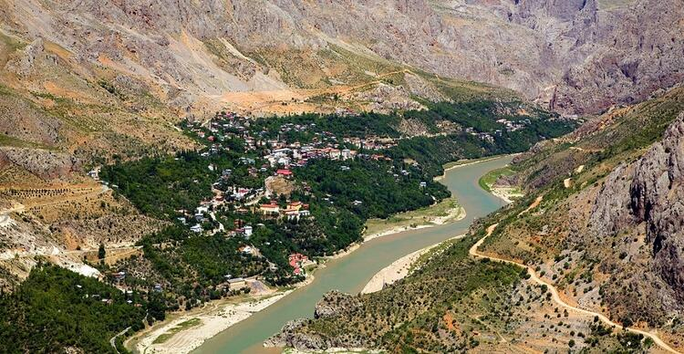

KEMALİYE

Doğayla tarihin birbirini tamamladığı Türkiye’nin büyüleyici yerlerinden Erzincan’ın Kemaliye ilçesi. Eski adı ‘Eğin’ olan Kemaliye, Erzincan’ın dokuz ilçesinden en ünlü olanı, zaten Erzincan’ın incisi olarak tanımlanıyor.
Ayrıca Kemaliye’de dünyanın en zorlu yolu ve Amerika’daki Büyük Kanyon’dan sonra dünyadaki en büyük ikinci kanyon yer alıyor. 1926’da Malatya’ya bağlanan Kemaliye, 1938’de Erzincan iline bağlandı.
Geçmişte ‘Eğin’ olarak bilinen ilçenin adı Mustafa Kemal’in adından esinlenerek ‘Kemaliye’ye çevrildi.Keban Baraj Gölü kıyısında oldukça etkileyici bir vadinin içinde bulunan Kemaliye, günümüzde geleneksel yöre mimarisini ve dokusunu büyük ölçüde koruyor.
Ayrıca Kemaliye, Büyük Kanyon’dan sonra dünyanın ikinci büyük karanlık kanyonuna sahip.Karanlık kanyon yerli turistler tarafından pek bilinmese de yabancı turistlerin ilgisini çekiyor.
Karanlık Kanyon’da 2008 yılından beri Uluslararası Doğa Sporları kapsamında BASE jumping atlayışları yapılıyor.Bu sayede ilçe özellikle yaz aylarında turistleri çekmeyi başarıyor.
Ünlü gezgin Evliya Çelebi Seyahatnamesi’nde, “Meyvelerle dolu, bağ bahçe bir kasaba” diye bahsettiği Kemaliye, aynı zamanda Eğin halıcılığı ile ünlü.Her yıl ilçede halı festivali düzenleniyor. Dünyaca ünlü Eğin halıcılığı ise öğretilmeye ve yeniden geliştirilmeye çalışılıyor.
İlçe aynı zamanda evleriyle de ünlü.Kemaliye evleri dünya kültür mirası listesinde yer alıyor. İlçede aynı zamanda pek çok tarihi alan var.Endiçi Kalesi, Roma Mezarlığı, Pigan Kalıntıları, Hasgel Kalıntıları, Arsanias Kalıntıları, Topkapı Kalesi, Orta Camii, Kadıgölü, Ala Mağarası ve Ocak Köyü bunlardan sadece birkaçı...